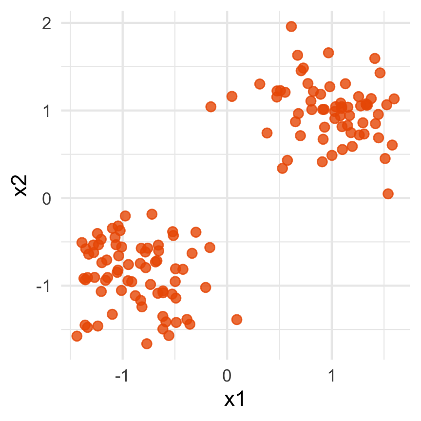
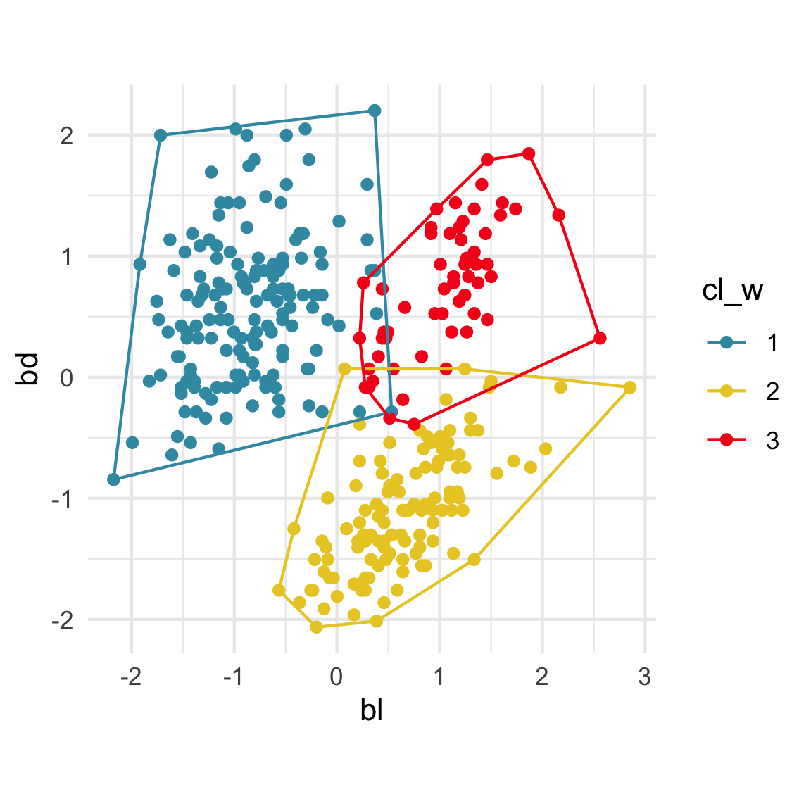

How do we know what we don’t know? ¿Cómo sabemos lo que no sabemos?

This talk is about visualisation to help in clustering high-dimensional data
Avoid cherry picking, look at all

Image: Sketchplanations
High-dimensional visualisation

Data is 3D:
Projection is 2D:
Notice that the values of change between (-1, 1). All possible values being shown during the tour.
See:
- circular shapes
- some transparency, reveals middle
- hole in in some projections
- no clustering
High-dimensional visualisation

Data is 4D:
Projection is 2D:
How many clusters do you see?
- three, right?
- one separated, and two very close,
- and they each have an elliptical shape.
- do you also see an outlier or two?
Tour architecture
- Data: -D
- Projection dimension: choose
- Rendering method: histogram, density plot, scatterplot, …
Algorithm:
- Path taken through high-dimensions: random, guided, local, little, manual
- Interpolation method: geodesic (plane to plane), Givens (basis to basis)
Software:

Model-based (3/3) ~~Which fits the data better?
Best model: four-cluster VEE

Three-cluster EEE

Summarising clusters
Convex hulls are often used to summarise clusters in 2D. It is possible to view these in high-d, too.


References and acknowledgements
- Cook and Laa (2023) Interactively exploring high-dimensional data and models in R
- Slides made in Quarto.
- Get a copy of slides at https://github.com/dicook/LatinR

This work is licensed under a Creative Commons Attribution-ShareAlike 4.0 International License.